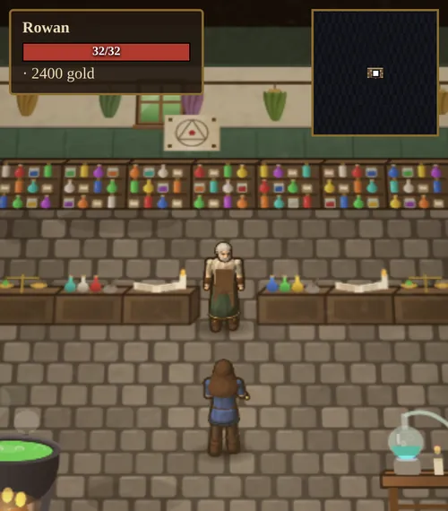

Gathering & Crafting
Wood, ore and aether become bows, armor, jewelry and enchantments; wool, cotton and hides become clothes; and wild herbs become potions.
Lumberjacking
Tap a tree to chop it. Each chop has a 35% chance to cut logs, plus 0.5% per point of Lumberjacking, and you cut more logs per chop as your skill grows. Each tree holds a few logs and grows back after about a minute. Logs sell for 2 gold and feed carpentry.
Carpentry

Menu → Craft → Carpentry turns logs into bows and arrows. No skill is needed.
| Make | Needs | Notes |
|---|---|---|
| Arrows ×6 | 1 log | You can make arrows in bulk. |
| Short bow | 4 logs | Range 6, +3 damage. Sells for 10g. |
| Long bow | 6 logs, 2 rat tails | Range 8, +6 damage. Sells for 20g. |
Mining
Buy a pickaxe from Mara for 45 gold, then tap an ore vein to mine it. Veins are found in the four mines and in the ruined watchtower a short walk outside the town walls, whose squared stones can still be quarried. Each vein holds a few loads of ore and crumbles when it runs out.
Your chance depends on your Mining skill, the ore's difficulty and your Strength. Mining is noisy: monsters within 12 tiles hear you and come looking.
| Ore | Mining skill to work well | Ore sells for | Smelting needs | Gear strength |
|---|---|---|---|---|
| Iron | 0 | 8g | 0 | ×1.00 |
| Copper | 12 | 16g | 8 | ×1.12 |
| Silver | 28 | 34g | 17 | ×1.28 |
| Gold | 46 | 70g | 27 | ×1.46 |
| Platinum | 66 | 140g | 39 | ×1.66 |
| Mithril | 84 | 300g | 51 | ×1.90 |
Below the listed skill you can still try, but you mostly scratch the rock. Rarer ore is found deeper in the mines.
Smelting and smithing

Inside Garrick's smithy, tap Use the forge. Smelt turns ore into ingots; it needs Blacksmithing of at least 60% of the ore's smelting level, and teaches more for rarer ore. Craft forges gear from ingots.
Gear from a better metal is stronger: a mithril piece has 1.9× the damage or armor of an iron one. Each piece shows its success chance on its button. A failure warps the piece and costs half the ingots. About one forging in twenty comes out Exceptional, with up to 40% extra strength depending on your Arms Lore.
| Piece | Ingots | Difficulty |
|---|---|---|
| Dagger | 3 | 0 |
| Helm | 4 | 5 |
| Boots | 4 | 8 |
| Buckler | 5 | 8 |
| Brigandine | 6 | 10 |
| Longsword | 6 | 14 |
| Great Helm | 6 | 20 |
| Heater Shield | 8 | 26 |
| Battle Axe | 8 | 28 |
| Greaves | 8 | 30 |
| Chainmail | 12 | 36 |
| Katana | 7 | 42 |
| Plate Armor | 20 | 62 |
You have about a 50% chance when your Blacksmithing equals the piece's difficulty plus 90% of the metal's smelting level, and better odds above that. A copper longsword (14 + 11) is an even bet at about 25 skill. The finest pieces in the rarest metals stay risky even for a master smith.
Jewelcrafting
Menu → Craft → Jewelcrafting makes a ring (2 ingots) or a necklace (3 ingots), with an optional gem: ruby, sapphire, emerald or diamond. A failure cracks the setting and costs one ingot.
New jewelry has no bonuses. Its value is in what it can hold: a better metal and a better gem let it take stronger enchantments and more of them, up to three.
Enchanting
Archmage Ilvara's tent has an enchanter's table that binds aether into gear. Aether drops from monsters in dungeons, and bosses drop several.
- You can enchant ordinary gear and jewelry you have made. Magic items and gifts cannot be enchanted.
- You can only add properties you have seen. Identify magic items with Arms Lore to learn what they hold: Strength, Dexterity, Intelligence, damage percentage, or any skill except Begging, Arms Lore and Enchanting.
- Each item has a maximum power and a number of slots. Ordinary gear has 1 or 2 slots, and jewelry up to 3.
- Choose one of three power levels. Stronger enchantments cost more aether (2 + power) and are more likely to fail.
- A failure costs half the aether. A success renames the item, for example "Silver Ring of Might".
Tailoring

Tamsin's tailor shop stands inside the walls, north-east of the square. Inside are her cutting table, a loom, a spinning wheel and a tanning tub. Tap any of them to start working, and tap anywhere else to stop. Tamsin sells yarn, thread, cloth and leather if you would rather not make your own, and teaches Tailoring up to 50.
Raw materials
- Wool: carry shears (30 gold at Mara's) and tap a woolly sheep to shear 2–4 wool. The fleece grows back in a few minutes. A killed sheep gives a hide and a little wool instead.
- Cotton: white-flowering bushes grow in clusters in the meadows, steppes, jungles and woods. Tap one to pick 1–3 raw cotton. The bolls open again after about four minutes.
- Hides: from goats, cows, bulls, deer and sheep (2–3 from cows and bulls, 1–2 from the rest).
| Station | Turns | Into | If it goes wrong |
|---|---|---|---|
| Spinning wheel | 1 wool or 1 raw cotton | 1 wool yarn or cotton thread | The fibre is lost. |
| Loom | 3 yarn or thread | 1 wool or cotton cloth | One yarn or thread is spoiled. |
| Tanning tub | 1 hide | 1 leather | The hide is ruined. |
Each piece takes a couple of seconds, and you keep working until you run out. The odds improve with Tailoring.
Sewing, dyes and patterns
Tap Tamsin's counter, or open the Sew tab in her shop. Each button shows the materials, your chance and the skill it wants, and you can try anything within 15 points of that skill.
- Dyes: cloth pieces can be dyed any of 22 colors, from Natural through Crimson, Forest, Sky, Plum, Charcoal and Saffron to Scarlet, Rose, Burgundy, Amber, Gold, Olive, Moss, Teal, Sea, Navy, Indigo, Lavender, Umber, Ivory, Ash and Black. Leather keeps its own color.
- Patterns: cloth can also be sewn with a pattern. Plain is always available. The others need more Tailoring:
| Pattern | Skill needed |
|---|---|
| Stripes | 15 |
| Pinstripe | 25 |
| Checks | 30 |
| Polka dots | 35 |
| Plaid | 45 |
| Harlequin | 60 |
A slip tears the seam and wastes half the material. About one piece in twenty comes out Exceptional, more often as your skill grows: +1 armor, +1 to each bonus, and worth 40% more.
| Piece | Slot | Materials | Skill | Armor | Bonus |
|---|---|---|---|---|---|
| Cotton shirt | Body | 3 cotton cloth | 0 | 1 | |
| Cloth cap | Head | 2 cotton cloth | 5 | 1 | |
| Cloth shoes | Feet | 2 cotton cloth | 10 | 1 | |
| Leather cap | Head | 2 leather | 15 | 1 | |
| Wool hood | Head | 2 wool cloth | 18 | 1 | +2 Int |
| Leather boots | Feet | 3 leather | 20 | 1 | |
| Wool tunic | Body | 4 wool cloth | 24 | 2 | |
| Leather tunic | Body | 5 leather | 30 | 2 | |
| Woven robe | Body | 5 wool cloth, 2 cotton cloth | 40 | 2 | +5 Int, +2 Magery |
| Ranger boots | Feet | 4 leather, 1 wool cloth | 48 | 2 | +3 Dex |
| Studded leather brigandine | Body | 8 leather, 2 iron ingots | 56 | 4 | +3 Dex |
| Wizard hat | Head | 3 wool cloth, 1 cotton cloth | 62 | 1 | +6 Int |
Tailoring also makes bandages. Cotton cloth can be cut into six bandages at Bram's stable (see Animals & Taming).
Herbs
Wild herbs grow all over the land, each in its own kind of country. Tap one to gather it. Your hero picks 1–3 (frost lilies and bloodmoss give 1–2), and the plant grows back in about five minutes. Herbs are alchemy ingredients, and mandrake root is also a reagent for Teleport.
| Herb | Grows in | Corvin sells it for |
|---|---|---|
| Silverleaf | Meadows and steppes, sometimes woods and deserts | 8g |
| Redcap mushroom | Woods and swamps, sometimes meadows | 8g |
| Mandrake root | Woods, jungles and meadows | 12g |
| Bloodmoss | Swamps and jungles | 14g |
| Sulphur | Deserts, crags and mountains | 14g |
| Frost lily | Snowfields and mountains | 16g |
Which regions your world has decides which herbs grow nearby, so Corvin keeps all six in stock.
Alchemy

Corvin's alchemy shop stands inside the walls, north-west of the square, with a bubbling cauldron, a glass still, a mortar table and racks of drying herbs. He sells empty flasks (4 gold) and every herb, and teaches Alchemy up to 50.
Brew at the cauldron: tap it (or the still or mortar) and choose a potion from the Brew tab. Every potion takes an empty flask and its herbs, and the stronger ones also want an elemental essence. You can try any recipe within 15 points of its skill. A botched brew curdles into sludge and wastes half the herbs, but you keep the flask. A skilled hand sometimes fills a second flask from the same pot if you have a spare.
| Potion | Skill | Ingredients (plus an empty flask) | Effect |
|---|---|---|---|
| Healing potion | 0 | 2 silverleaf | Restores 30 health. |
| Mana potion | 8 | 2 redcap mushrooms | Restores 30 mana. |
| Vigor potion | 18 | Silverleaf, mandrake root | +10 Strength, and your wounds close by themselves. |
| Haste potion | 28 | Mandrake root, frost lily | You move far faster and strike a little quicker (+12 Dexterity). |
| Explosion potion | 34 | 2 sulphur, redcap mushroom | Thrown; bursts into a fireball after a short fuse. |
| Protection potion | 44 | Bloodmoss, mandrake root, sulphur | +5 armor, and every blow lands a fifth softer. |
| Greater healing potion | 50 | 3 silverleaf, bloodmoss | Restores 70 health. |
| Greater mana potion | 56 | 2 redcap mushrooms, frost lily, water essence | Restores 80 mana. |
| Luck potion | 64 | 2 frost lilies, silverleaf, bloodmoss | Half again as much gold from the fallen, and a chance of a gem. |
| Fury potion | 72 | 2 sulphur, 2 bloodmoss, fire essence | Your attacks and spells deal 30% more damage. |
Draughts
Vigor, Haste, Protection, Luck and Fury are draughts. Each lasts four minutes of real time, with a countdown under your name and on the character sheet. Only one draught works at a time. Drinking another replaces the one you have, and drinking the same one again resets its timer.
Explosion potions
Tap an explosion potion and a banner asks where to throw it. Tap a spot you can see up to 12 paces away. The flask flies in an arc, lands, fizzes for about a second and a half, then bursts. Everything within about a tile and a half takes 18–30 damage plus a quarter of your Alchemy, and anything a little further out takes about half that. Monsters hiding in shadow are knocked into the open. Stand clear: you take half damage if you are inside the blast. You cannot throw one inside the town walls or inside a building.
Once you carry more than two kinds of potion, the extras go into a potion pouch button beside your healing potion.
Next: Food, Fishing & Camping.